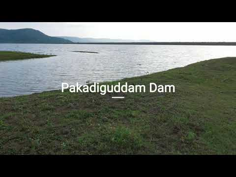

Pakadiguddam Dam
Pakadiguddam Dam
The Pakadiguddam Dam in Chanda district. It is an earthfill dam build across the Deogad river near Chandrapur. Its official name is Pakadiguddam Dam D02926. The primary purpose of this dam was to Irrigation. The height of the dam is 19 meters, and the length is 1,814 meters.
About

Pakadiguddam Dam, is an earthfill dam on Devghat river near Korpana in the state of Maharashtra in India.The height of the dam above lowest foundation is 19 m (62 ft) while the length is 1,814 m (5,951 ft). The volume content is 1,067 km3 (256 cu mi) and gross storage capacity is 13,307.00 km3 (3,192.52 cu mi).